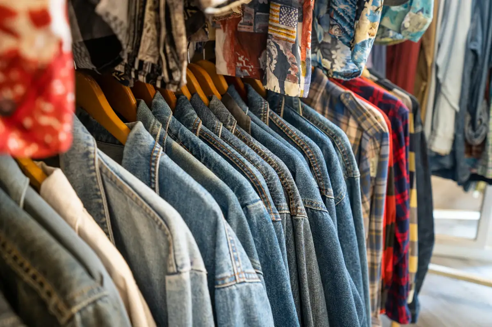
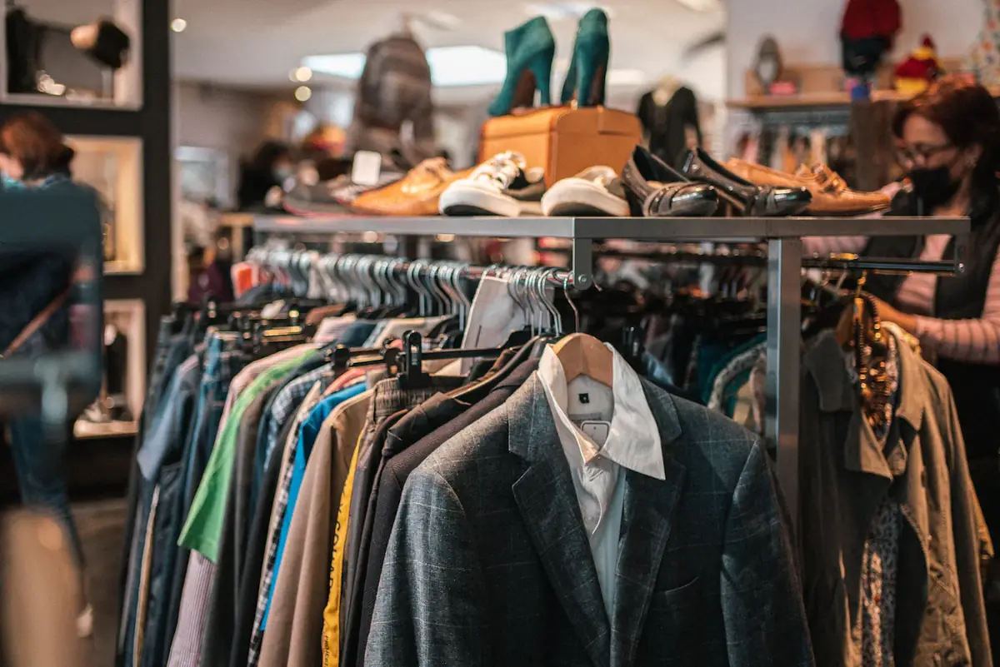
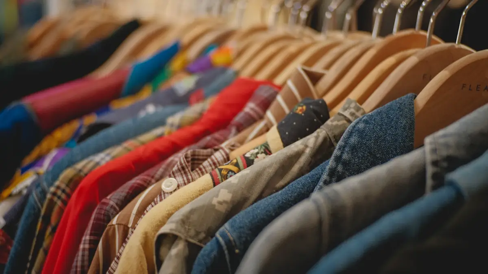
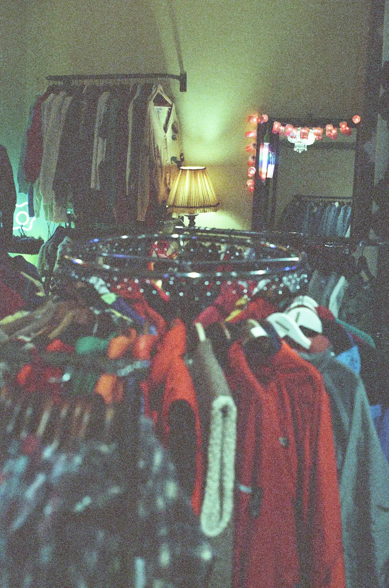
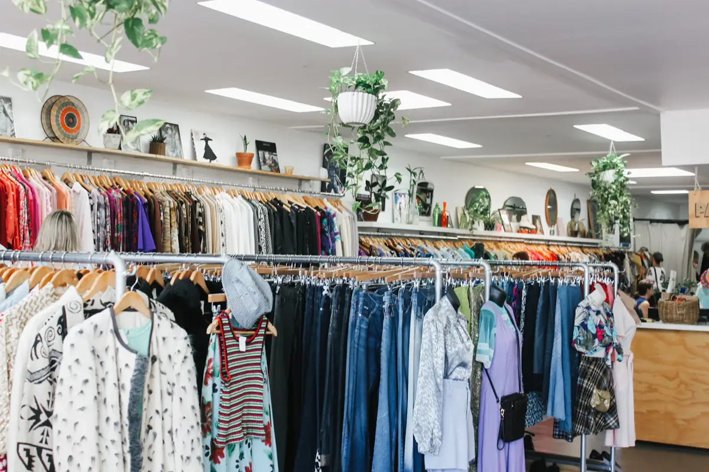
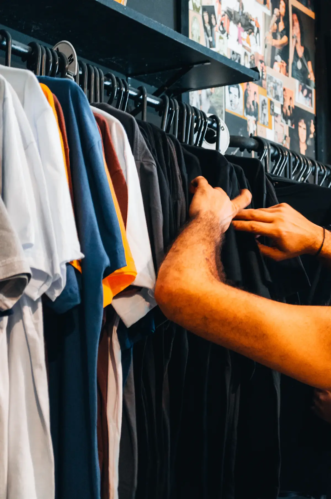
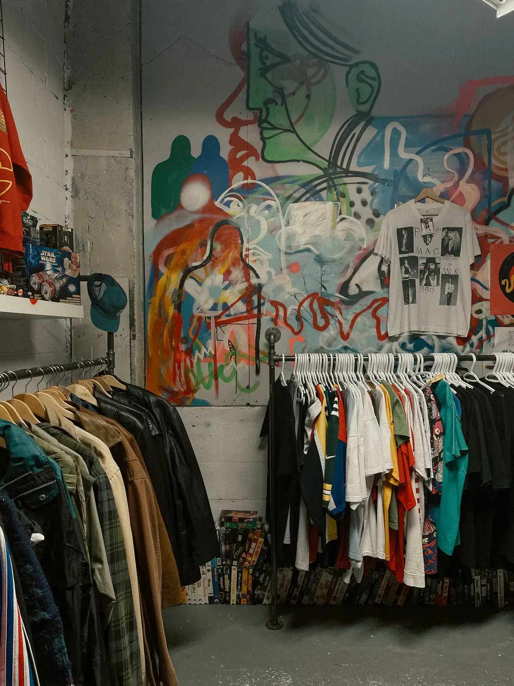
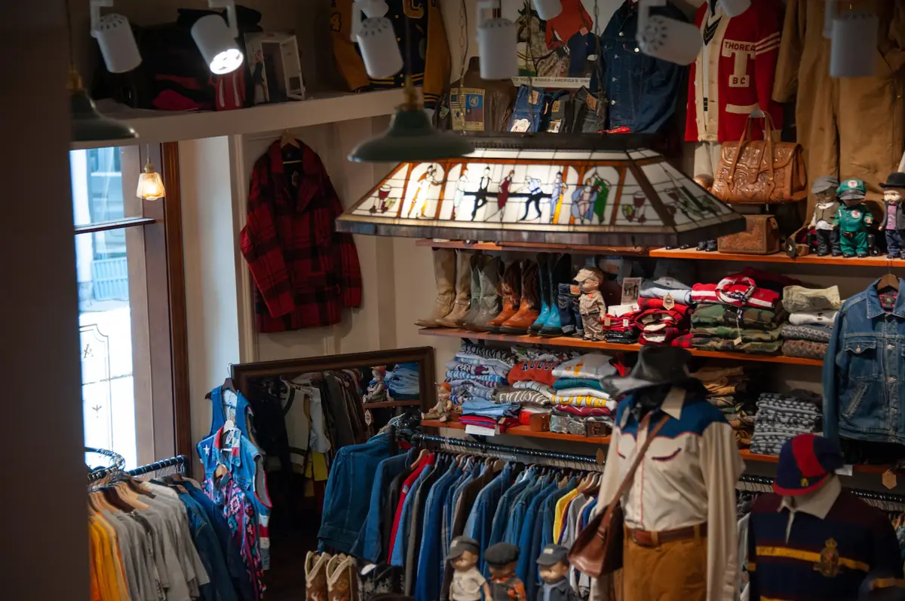
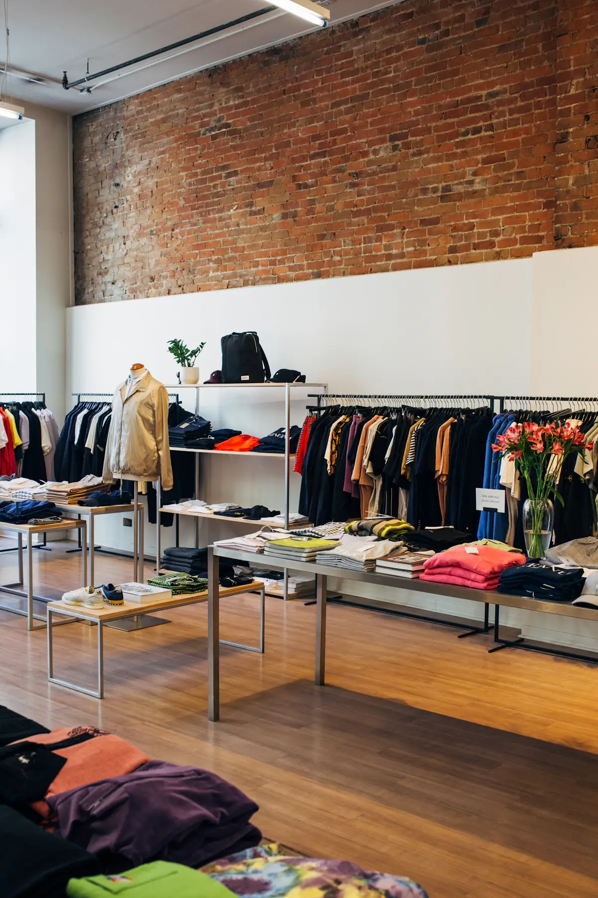

Denim
Vestes, jeans droits et larges, coupes d'époque dans toutes les tailles.
The Lab · Friperie à Saint-Junien
Denim, vestes, sportswear et pièces uniques chinées une à une. De nouveaux arrivages chaque semaine.
Chaque pièce est choisie à la main, vérifiée, puis mise en rayon. Pas de stock infini : quand elle est partie, elle est partie.

Vestes, jeans droits et larges, coupes d'époque dans toutes les tailles.

Blousons, workwear, cuir et pièces de saison, sélectionnés à l'unité.

Sweats, chemises et maillots des années 80 à 2000.

Boots, sneakers, sacs et bonnets pour finir la tenue.

Moins de pièces, mieux choisies, rangées pour qu'on s'y retrouve.
Le rayon change souvent. Les nouveautés passent d'abord sur Instagram.
@thelab.vintageUne pièce qui revit, c'est un vêtement neuf en moins à produire.

Des portants pleins, des pièces qui changent chaque semaine. Prenez le temps de chiner.



Place Guy Mocquet
87200 Saint-Junien
Mardi au samedi
10h - 12h30 et 14h - 19h